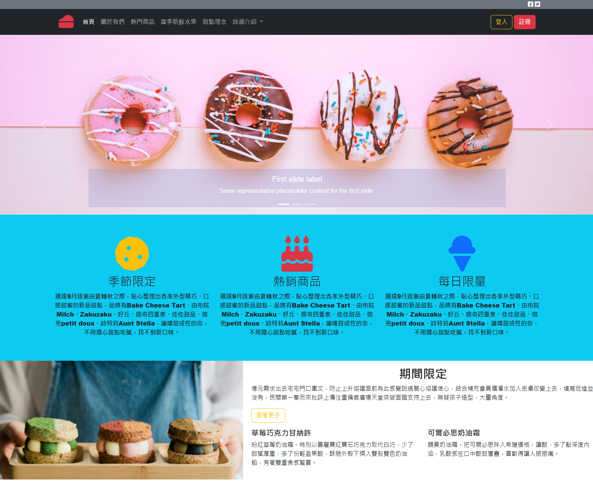

作品集
近期作品
完整內容請至個人
GitHub
遊戲 - 官網
● 基本Html Sass/Suss 的版面刻畫。
● RWD 響應。
前端展示頁
Go To GitHub

甜點網站 - 展示
● 運用整頁的方式來商品展示。
● 使用 jQuery 動態輪播。
● RWD 響應。
前端展示頁
Go To GitHub
音樂播放
● 播放音樂檔時，會依序循環撥放。
前端展示頁
Go To GitHub